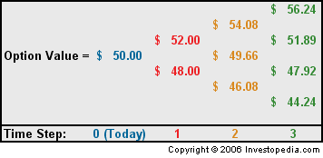

An options valuation method developed by Cox, et al, in 1979. The binomial option pricing model uses an iterative procedure, allowing for the specification of nodes, or points in time, during the time span between the valuation date and the option's expiration date.
The model reduces possibilities of price changes, removes the possibility for arbitrage, assumes a perfectly efficient market, and shortens the duration of the option. Under these simplifications, it is able to provide a mathematical valuation of the option at each point in time specified.
The binomial model takes a risk-neutral approach to valuation. It assumes that underlying security prices can only either increase or decrease with time until the option expires worthless. A simplified example of a binomial tree might look something like this:
Due to its simple and iterative structure, the model presents certain unique advantages. For example, since it provides a stream of valuations for a derivative for each node in a span of time, it is useful for valuing derivatives such as American options which allow the owner to exercise the option at any point in time until expiration (unlike European options which are exercisable only at expiration). The model is also somewhat simple mathematically when compared to counterparts such as the Black-Scholes model, and is therefore relatively easy to build and implement with a computer spreadsheet.
{kind=link}